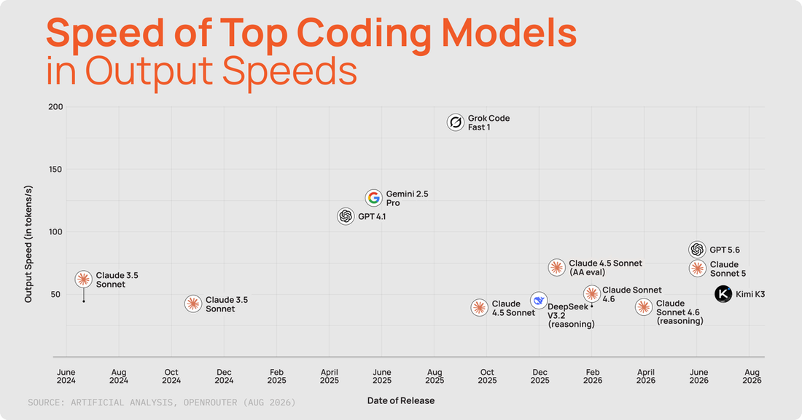
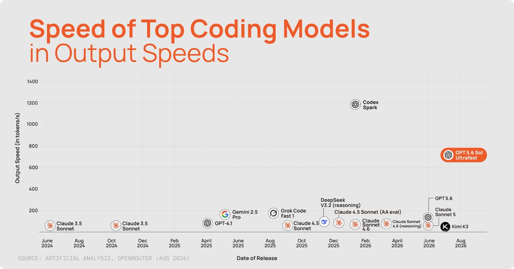
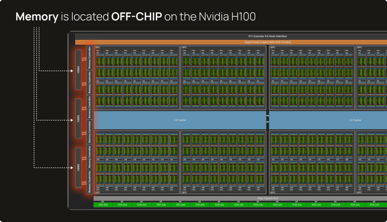
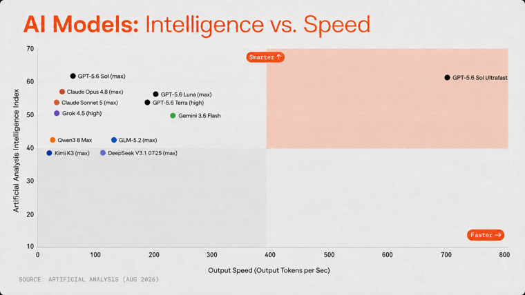
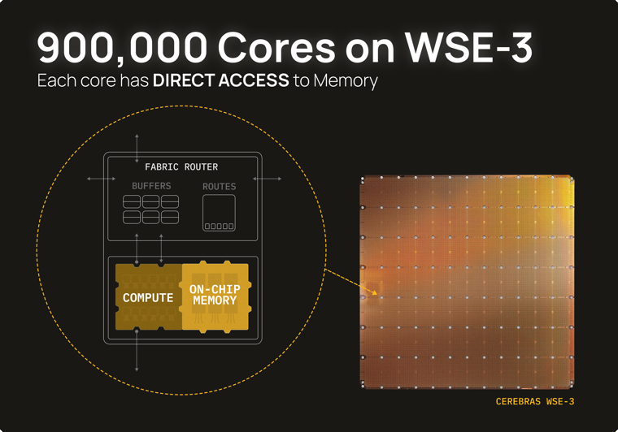
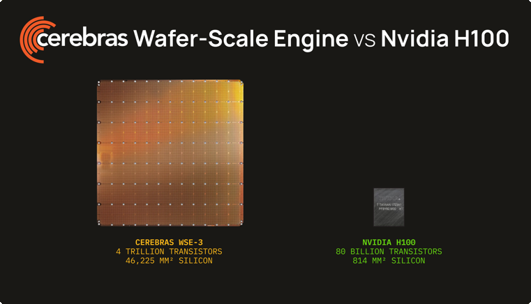

过去两年AI模型的能力大幅跃升：能更久推理、写出生产级代码、操作电脑、用浏览器，并在科学、金融、数学、物理、工程等领域产出专业工作。但体验的一部分始终没变：等待。
OpenAI正在预览跑在Cerebras上的GPT-5.6 Sol的新Ultrafast模式，最高750输出token/秒。这个速度改变了我们使用AI的方式：现在能和agent保持在同一节奏、实时协作。本文（Cerebras DevX负责人Sarah Chieng的X长文）讲清它怎么做到的。
过去两年AI模型能力大幅跃升：能更久推理、写生产级代码、操作电脑、用浏览器，并在科学、金融、数学、物理、工程产出专业工作。
但体验的一部分始终没变：等待。
OpenAI正在预览跑在Cerebras上的GPT-5.6 Sol的新Ultrafast模式，最高750输出token/秒。这个速度改变我们使用AI的方式：现在能留在工作流里，与agent实时协作。
最重要的细节是我们没有改什么。
Cerebras上的GPT-5.6 Sol不是更小的模型、没有蒸馏、也没有量化到更低精度。它使用与标准OpenAI端点上GPT-5.6 Sol完全相同的模型架构、权重、精度、上下文配置和推理设置。它完整保留了人们喜爱的browser-use、computer-use、coding能力。
唯一差异是模型运行的硬件：不再是GPU，我们在Cerebras WSE-3上服务Sol-Ultrafast：世界上最大的AI芯片。
用Cerebras，GPT-5.6-Sol重新定义了「速度到智能」的帕累托前沿（speed to intelligence Pareto frontier）。
Why frontier-model inference is usually slow

在传统GPU上，计算核心和存放模型权重的高带宽内存（HBM）在分离的芯片上。推理里每次计算，权重都必须反复越过那道边界到达计算核心。随着模型变大，推理更多受「系统能多快搬运这些权重」约束，而非算术本身。
这就是GPU内存墙（GPU memory wall）。
加GPU能提升吞吐，但不会自动让单个响应变快。把模型拆到多块芯片意味着每一层都以同步步骤收尾，每加一块芯片都让那步更贵、同时缩小它本想加速的计算。存在交叉点：互连开销压过收益，更多硬件反而让模型更慢。说白了：计算机花太多时间搬数据了。
Cerebras的构建正是为了解决这个内存搬运瓶颈：造一个足够大的处理器，让模型的活跃权重直接待在使用它们的计算核心旁。
How Cerebras accelerates models, starting with an entire silicon wafer

传统芯片从硅晶圆上切割下来。Cerebras则直接把整片晶圆当作芯片。

在传统GPU上，模型权重住在片外HBM、每个token都必须越过边界进入compute。WSE-3则把44GB SRAM分布在整片晶圆上、直接放在其900,000个核心旁。这套内存合起来提供每秒21拍字节（21 PB/s）的聚合带宽，让每个核心都能快速访问它需要的权重。
GPT-5.6 Sol对单块加速器太大，所以Cerebras在层边界把它分区到多个CS-3系统上。每片晶圆在本地SRAM保留它分到的层。对每个token，activation从一片晶圆移到下一片，直到最终阶段输出结果。
这用更简单的路径替代了传统GPU集群所需的细粒度分片和同步：权重贴近compute、只有activation在阶段间移动。然后管线重复：最高每秒750次。
What up to 750 tokens per second means for you

大多数人以为和agent协作就是给个输入、得到输出。但底层agent要好多步：读任务、推理结果、写代码、测试它的工作、决定下一步，在一个循环里工作直到准备好交出回合。
复杂任务可能涉及多个模型请求和工具调用，延迟会随工作流累积。
这意味着每token延迟不是一次性代价，而是你在每一步都要付、并且乘以完成任务所需步数的成本：而那些步数累积得很快。
那个乘数是可测的，而且比你想的大。在一份质量匹配的GDP-Val任务样本（含法律、金融、工程交付物）上，GPT-5.6 Sol Ultrafast比同一模型在标准端点快5.6× 完成同样的任务。
在Humanity's Last Exam的匹配问题（推理主导工作流）上，Sol Ultrafast快6.9× 完成成功工作。照这个速度，一个1小时的任务不到9分钟就完成。
For Developers
没有哪里比编码更能体现Cerebras的速度。开发者让agent连续工作几小时甚至几天很常见。无论跑循环还是长驻agent，Sol on Cerebras都是无与伦比的体验：前沿级智能以极速服务，让你比以往更快构建、测试、迭代想法。
For Knowledge Workers

知识工作有更多人在回路。但它仍是一个循环：工作流很大部分是阅读和决策、评估输出、创建交付物，而人一直在等待。每秒最多750 token让迭代显著更快，同样时间里产出更多，无论是起草邮件、处理税务还是剪视频。
Computer Use & Automation
agent最受欢迎的新用例之一，是在你许可下、在你专注更重要任务时，让模型在后台使用你的机器或浏览器。这赋予你创建强大自动化、把你能描述的任务直接委派给agent的能力，而不接管你的机器。
更快的推理对computer-use工作负载的好处：减少「观察界面 → 决定做什么 → 采取下一步行动」之间的延迟。
另外，Cerebras在其公共端点上以每秒数千token服务领先的开放模型：

OpenAI GPT OSS 120B在3,000 tok/s
Gemma 4 31B在1,850 tok/s
Z.ai GLM 4.7在1,000 tok/s
对专用企业端点，Cerebras还支持Kimi K2.6、GLM 5.1、MiniMax M2.5、Qwen3 Coder 480B、Llama 4 Maverick、Mistral Large 3、DeepSeek V3.2，以及更多模型家族。
Additional Sources
OpenAI: GPT-5.6 launch；Cerebras WSE-3 product page；Cerebras: Introducing Cerebras Inference；Cerebras: WSE-3 announcement；Cerebras: OpenAI partnership；Cerebras: Getting the most out of GPT-5.6 (Sol, Terra, Luna)；Cerebras GPT-5.6-Ultrafast Blog。
图表由Halley Chang绘制。
参考：https://x.com/MilksandMatcha/status/2092664576404070562